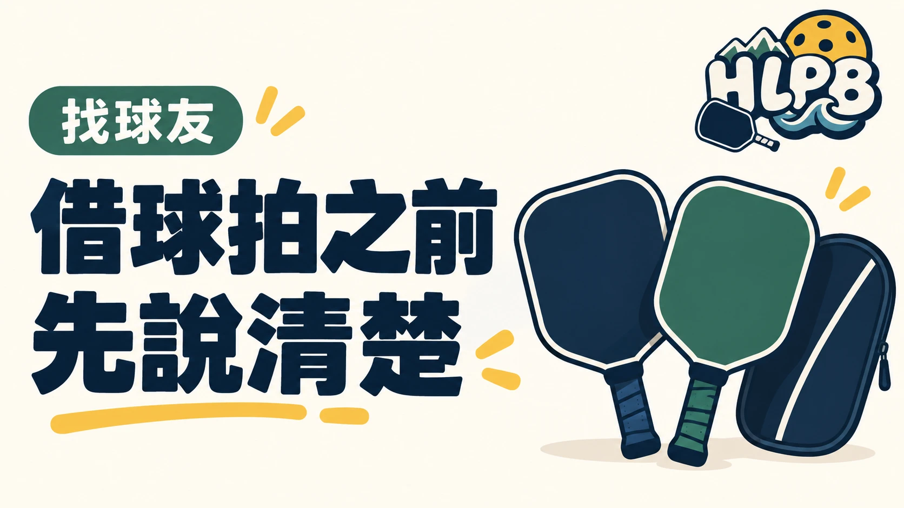

第一次參加球局，還沒買球拍，可以先詢問是否有器材能借。但現場有放球拍，不代表每支都能直接拿。
借用前，先問清楚這四件事
借用前把這四件事說清楚，歸還時比較不容易漏東漏西：
| 要問什麼 | 確認重點 |
|---|---|
| 可以借哪支？ | 由器材持有人確認，不自行挑走 |
| 能用到什麼時候？ | 是否限本場使用，何時、交給誰歸還 |
| 可以調整嗎？ | 更換握把布、貼配重或護邊前，先取得同意 |
| 發現異常怎麼辦？ | 使用前後看一下，有鬆動、裂痕或其他問題就告知 |
是否收費、需要登記或有其他條件，也應在借用前問清楚。以上是HLPB 編輯整理的借用檢查清單，不是所有場館的共同規定。
用完也要完整交回
借拍的重點不只在省下第一次購買的費用，也能先認識自己拿得順不順手。歸還時確認球拍、拍套及其他借用品都交回原處，讓下一位球友也能接著使用。
來源：HLPB 球具資訊與編輯整理（借用檢查建議，非統一規定） ↗。資料核對：2026/10/16。
最後查證：2026-10-16｜資料來源：HLPB 編輯整理與正文所列來源
返回文章列表